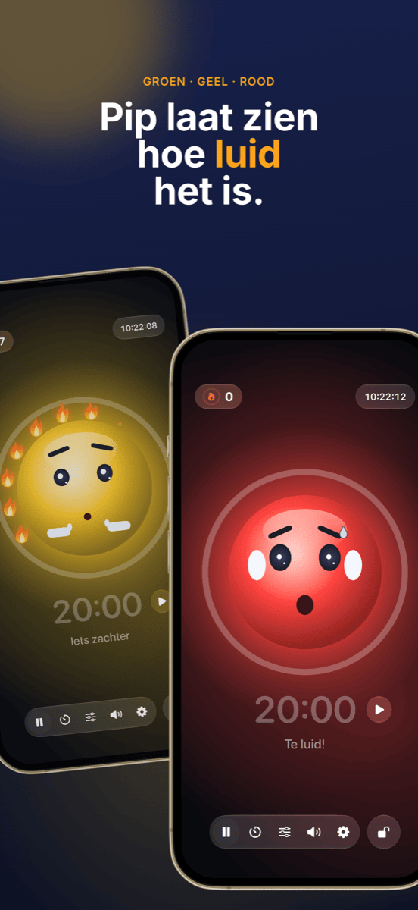

Klassenmanagement: plattegrond, groepjes en geluid onder controle
Goed klassenmanagement valt nauwelijks op, en dat is precies de bedoeling: de les loopt, overgangen gaan soepel en de tijd gaat naar leren in plaats van naar vermanen. Drie vragen komen bijna elke les terug: wie zit waar? Wie werkt met wie? En hoe luid mag het nu zijn? Deze gids laat een werkwijze zien die alle drie beantwoordt voordat ze een probleem worden.
Wat klassenmanagement eigenlijk inhoudt
Klassenmanagement is meer dan orde houden. Al in de jaren zeventig liet de Amerikaanse psycholoog Jacob Kounin zien dat effectieve leraren zich minder onderscheiden door hoe ze op verstoringen reageren dan door hoe goed ze die voorkomen. Tot zijn kenmerken horen:
- Alomtegenwoordigheid: de klas merkt dat je het hele lokaal in de gaten hebt.
- Soepelheid en tempo: overgangen tussen fasen kosten geen minuten en de les verliest haar vaart niet.
- Groepsactivering: iedereen blijft betrokken, niet alleen wie net aan de beurt is.
Veel daarvan is houding en ervaring. Een deel is echter gewoon organisatie, en dat kun je voorbereiden. Daar begint de volgende werkwijze.
Stap 1 · Eenmalig voorafKlassenlijst één keer aanmaken, overal gebruiken
De grootste tijdvreter is dubbel werk. Exporteer je klassenlijst één keer als CSV uit Excel, Numbers of Google Spreadsheets. Zowel Platzwahl als Team Zufall importeren dat bestand direct, en de hele klas staat er binnen seconden in. Beide apps bewaren de namen alleen lokaal op het apparaat, zonder account en zonder cloud. Bij leerlinggegevens is dat geen detail, maar een voorwaarde.
Stap 2 · Het fundamentDe plattegrond: verstoringen voorkomen voordat ze ontstaan
De plattegrond is het krachtigste instrument voor klassenmanagement, omdat hij elke minuut werkt zonder dat je iets hoeft te zeggen. Wie naast wie zit, bepaalt gekletst, afleiding en concentratie. Wat werkt:
- Onrustige leerlingen scheiden, niet alleen naast elkaar, maar ook achter elkaar.
- Nabijheid benutten: wie ondersteuning nodig heeft of snel afdwaalt, zit in je directe blikveld.
- Rustige ankers verdelen tussen levendigere leerlingen.
- Regelmatig wisselen, bijvoorbeeld na de vakantie of maandelijks, zodat er geen vaste onrusthoeken ontstaan.
Met Platzwahl leg je deze regels per leerling vast (storingsrisico, plek vooraan, gewenste buren, scheidingen) en laat je de plattegrond automatisch berekenen. Een score laat zien hoe goed alle regels worden nageleefd. De kant-en-klare plattegrond gaat als pdf op je bureau.
 Stap 3 · Samenwerkingsfasen
Stap 3 · Samenwerkingsfasen
Eerlijke groepjes, zonder discussie
‘Mogen we zelf kiezen?’ is de vraag waarmee veel groepsopdrachten al verloren zijn voordat ze beginnen. Vrij kiezen kost tijd, versterkt kliekjes en laat altijd dezelfden over. Gericht indelen is eerlijk, maar bewerkelijk, en voor tien minuten tweetallenwerk nauwelijks de moeite.
Voor de vele korte fasen is toeval de beste oplossing: het is snel, niemand voelt zich voorgetrokken en de klas leert met iedereen samen te werken. Belangrijk is dat de loting zichtbaar is. Als de klas op het digibord ziet hoe de namen worden gehusseld, valt er niets te discussiëren.
In Team Zufall kies je het aantal teams, zet je afwezigen met één tik uit en loot je. De teams kun je groot op de muur projecteren of als pdf exporteren. Voor langere projecten waarbij bepaalde combinaties vermeden moeten worden, blijft gericht indelen de betere keuze.
 Stap 4 · Werkfase
Stap 4 · Werkfase
Geluid zichtbaar maken in plaats van steeds ‘ssst’ zeggen
Groepswerk is luid, en dat is prima. Het wordt een probleem als niemand meer weet hoe luid te luid is en je de les vult met ‘Ssst!’. Vermaningen slijten snel en onderbreken juist wie geconcentreerd werkt.
Drie dingen werken beter:
- Volume afspreken: leg met de klas vast wat in welke fase geldt. Fluisteren bij zelfstandig werken, tweetalstem bij groepswerk.
- Volume tonen: een geluidsstoplicht op het digibord geeft de klas de feedback die je anders hardop zou moeten geven.
- Rust belonen in plaats van lawaai bestraffen: als het stoplicht alleen rood wordt en iets afpakt, wordt het snel een drukmiddel, en worden enkele luide leerlingen de zondebok van de klas. Een gezamenlijk doel dat de klas kan halen werkt beter.
Precies daarvoor is Ruhe gemaakt: een mascotte toont groen, geel of rood, en zolang het rustig is, gaat de ene vlam na de andere aan. Twaalf vlammen vormen een volle krans, en dat wordt gevierd. De drempels voor geel en rood stel je per fase in, of je laat Ruhe zichzelf kalibreren. Een timer toont de resterende tijd, de beamerweergave zet alles groot op de muur en de bediening blijft op je iPad. Ruhe meet alleen het volume; er wordt niets opgenomen.

Stap 5 · AfsluitingSuccessen zichtbaar maken
Aan het eind van de les telt wat gelukt is. Een volle vlammenkrans is een mooie aanleiding voor een kort compliment aan de hele klas. En als het vandaag niet lukte, is dat een kans om samen te bedenken waar het aan lag, zonder schuldigen te zoeken. Terugkerende problemen aan bepaalde tafels zijn een teken dat de volgende plattegrond eraan komt.
Zo ziet een les met deze werkwijze eruit
| Fase | Wat er gebeurt | Hulpmiddel |
|---|---|---|
| Voor de les | De plattegrond ligt klaar, iedereen weet waar hij zit. Geen gedrang om plekken. | Platzwahl |
| Start | Klassikale fase in de vaste opstelling. | – |
| Overgang | Teams worden op het digibord geloot, afwezigen zijn uitgezet. | Team Zufall |
| Werkfase | Geluidsstoplicht en timer lopen op het digibord, de klas verzamelt vlammen. | Ruhe |
| Afronding | Terug naar de vaste plekken, even kijken naar de vlammenkrans. | Ruhe |
Veelgestelde vragen
Wat betekent klassenmanagement?
Klassenmanagement omvat alles wat een leraar doet zodat zoveel mogelijk lestijd echt leertijd is: regels en routines, inrichting van het lokaal en de plattegrond, soepele overgangen en zicht op de hele klas. Het draait minder om reageren op verstoringen dan om voorkomen dat ze ontstaan.
Wat helpt als de klas voortdurend te luid is?
Spreek eerst met de klas af welk volume in welke fase is toegestaan. Maak het volume daarna zichtbaar in plaats van steeds te vermanen, bijvoorbeeld met een geluidsstoplicht op het digibord. Het meest effectief is rustige fasen te waarderen in plaats van alleen lawaai te bestraffen.
Is een geluidsstoplicht in de klas zinvol?
Ja, als het wordt ingezet als gezamenlijk doel en niet als strafmiddel. De drempels moeten bij de fase passen: groepswerk mag luider zijn dan zelfstandig werken. Een stoplicht dat rust beloont in plaats van lawaai te bestraffen, voorkomt dat enkele luide leerlingen de zondebok van de klas worden.
Kun je groepjes beter willekeurig of gericht indelen?
Beide hebben hun plek. Voor korte, frequente fasen in tweetallen of groepjes is toeval ideaal: snel, eerlijk en zonder discussie over wie met wie. Voor langere projecten of lastige combinaties loont gericht indelen. De plattegrond zelf moet daarentegen altijd bewust worden gepland.